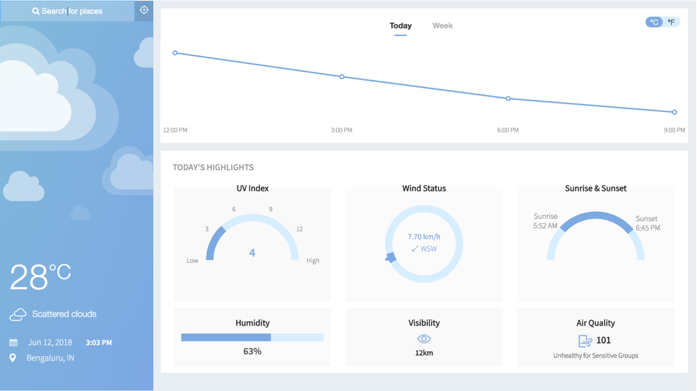

About Us
Weather Now is a simple and intuitive weather web application created to help users get quick and accurate weather updates for any city.
Our platform is designed with a clean, responsive interface suitable for students, developers, or anyone interested in checking live weather information easily.
This project is developed as part of an internship assignment focused on learning and building real-world web applications using HTML, CSS, and JavaScript, and optionally deploying them on platforms like Azure.
We aim to continuously improve the app by adding real-time API integration and modern weather features.
